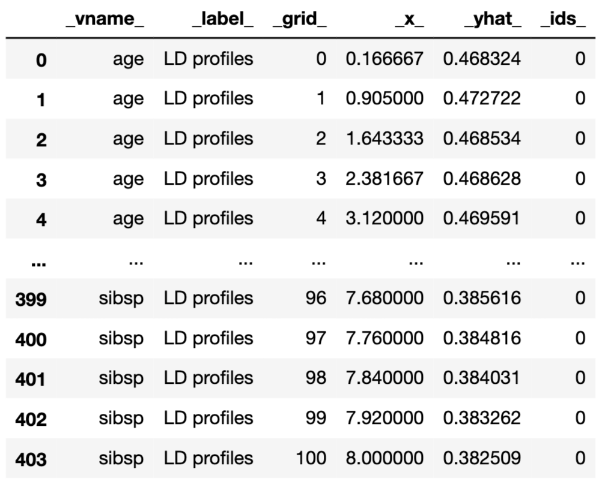
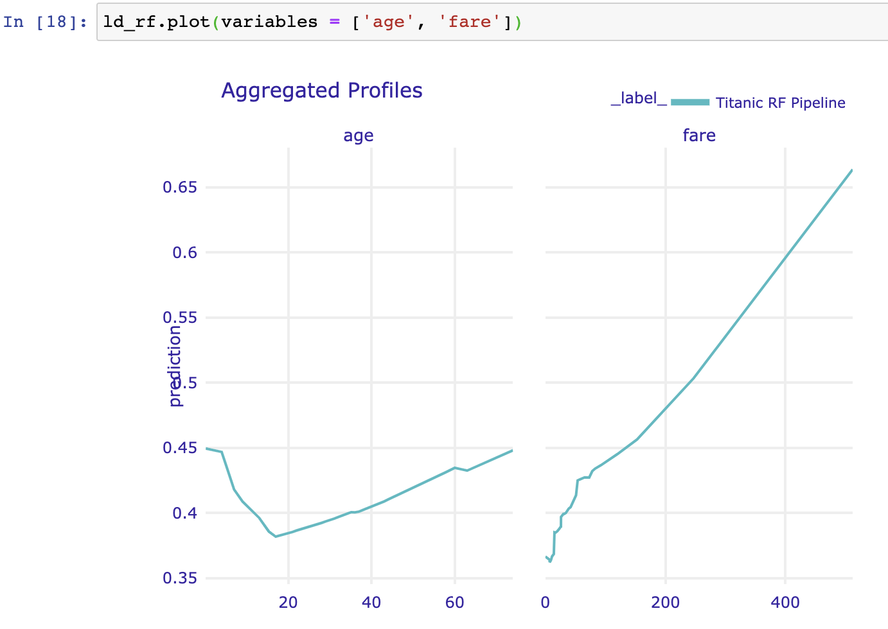

19 Local-dependence and Accumulated-dependence Profiles
19.1 Introduction
Partial-dependence (PD) profiles, introduced in the previous chapter, are easy to explain and interpret, especially given their estimation as the mean of ceteris-paribus (CP) profiles. However, as it was mentioned in Section 18.5, the profiles may be misleading if, for instance, explanatory variables are correlated. In many applications, this is the case. For example, in the apartment-prices dataset (see Section 5.4), one can expect that variables surface and number of rooms may be positively correlated, because apartments with a larger number of rooms usually also have a larger surface. Thus, in ceteris-paribus profiles, it is not realistic to consider, for instance, an apartment with five rooms and a surface of 20 square meters. Similarly, in the Titanic dataset, a positive association can be expected for the values of variables fare and class, as tickets in the higher classes are more expensive than in the lower classes.
In this chapter, we present accumulated-dependence profiles that address this issue. As they are related to local-dependence profiles, we introduce the latter first. Both approaches were proposed by Apley (2018).
19.2 Intuition
Let us consider the following simple linear model with two explanatory variables:
\[\begin{equation} Y = X^1 + X^2 + \varepsilon = f(X^1, X^2) + \varepsilon, \tag{19.1} \end{equation}\]
where \(\varepsilon \sim N(0,0.1^2)\).
For this model, the effect of \(X^1\) for any value of \(X^2\) is linear, i.e., it can be described by a straight line with the intercept equal to 0 and the slope equal to 1.
Assume that observations of explanatory variables \(X^1\) ad \(X^2\) are uniformly distributed over the unit square, as illustrated in the left-hand-side panel of Figure 19.1 for a set of 1000 observations. The right-hand-side panel of Figure 19.1 presents the scatter plot of the observed values of \(Y\) in a function of \(X^1\). The plot for \(X^2\) is, essentially, the same and we do not show it.
Figure 19.1: Observations of two explanatory variables uniformly distributed over the unit square (left-hand-side panel) and the scatter plot of the observed values of the dependent variable \(Y\) in a function of \(X^1\) (right-hand-side panel).
In view of the plot shown in the right-hand-side panel of Figure 19.1, we could consider using a simple linear model with \(X^1\) and \(X^2\) as explanatory variables. Assume, however, that we would like to analyze the data without postulating any particular parametric form of the effect of the variables. A naïve way would be to split the observed range of each of the two variables into, for instance, five intervals (as illustrated in the left-hand-side panel of Figure 19.1), and estimate the means of observed values of \(Y\) for the resulting 25 groups of observations. The table below provides the sample means (with rows and columns defined by the ranges of possible values of, respectively, \(X^1\) and \(X^2\)).
| (0,0.2] | (0.2,0.4] | (0.4,0.6] | (0.6,0.8] | (0.8,1] | |
|---|---|---|---|---|---|
| (0,0.2] | 0.19 | 0.42 | 0.63 | 0.80 | 0.99 |
| (0.2,0.4] | 0.39 | 0.59 | 0.81 | 1.01 | 1.19 |
| (0.4,0.6] | 0.59 | 0.81 | 0.98 | 1.20 | 1.44 |
| (0.6,0.8] | 0.76 | 1.00 | 1.20 | 1.40 | 1.58 |
| (0.8,1] | 1.01 | 1.22 | 1.38 | 1.58 | 1.77 |
The means are based on the following numbers of observations:
| (0,0.2] | (0.2,0.4] | (0.4,0.6] | (0.6,0.8] | (0.8,1] | total | |
|---|---|---|---|---|---|---|
| (0,0.2] | 51 | 39 | 31 | 43 | 43 | 207 |
| (0.2,0.4] | 39 | 40 | 35 | 53 | 42 | 209 |
| (0.4,0.6] | 28 | 42 | 35 | 49 | 40 | 194 |
| (0.6,0.8] | 37 | 30 | 36 | 55 | 45 | 203 |
| (0.8,1] | 43 | 46 | 36 | 28 | 34 | 187 |
| total | 198 | 197 | 173 | 228 | 204 | 1000 |
By using this simple approach, we can compute the PD profile for \(X^1\). Consider \(X^1=z\). To apply the estimator defined in (18.2), we need the predicted values \(\hat{f}(z,x^2_i)\) for any observed value of \(x^2_i \in [0,1]\). As our observations are uncorrelated and fill-in the unit-square, we can use the suitable mean values for that purpose. In particular, for \(z \in [0,0.2]\), we get
\[\begin{eqnarray} \hat g_{PD}^{1}(z) &=& \frac{1}{1000}\sum_{i}\hat{f}(z,x^2_i) = \\ &=& (198\times 0.19+197\times 0.42+ 173\times 0.63 + 228\times 0.80 + 204\times 1.00)/1000 = \\ &=& 0.6. \tag{19.2} \end{eqnarray}\]
By following the same principle, for \(z \in (0.2,0.4]\), \((0.4,0.6]\), \((0.6,0.8]\), and \((0.8,1]\) we get the values of 0.8, 1, 1.2, and 1.4. Thus, overall, we obtain a piecewise-constant profile with values that capture the (correct) linear effect of \(X^1\) in model (19.1). In fact, by using, for instance, midpoints of the intervals for \(z\), i.e., 0.1, 0.3, 0.5, 0.7, and 0.9, we could describe the profile by the linear function \(0.5+z\).
Assume now that we are given the data only from the regions on the diagonal of the unit square, as illustrated in the left-hand-side panel of Figure 19.2. In that case, the observed values of \(X^1\) and \(X^2\) are strongly correlated, with the estimated value of Pearson’s correlation coefficient equal to 0.96. The right-hand-side panel of Figure 19.2 presents the scatter plot of the observed values of \(Y\) in the function of \(X^1\).
Figure 19.2: Correlated observations of two explanatory variables (left-hand-side panel) and the scatter plot of the observed values of the dependent variable \(Y\) in the function of \(X^1\) (right-hand-side panel).
Now, the “naïve” modelling approach would amount to using only five sample means, as in the table below.
| (0,0.2] | (0.2,0.4] | (0.4,0.6] | (0.6,0.8] | (0.8,1] | |
|---|---|---|---|---|---|
| (0,0.2] | 0.19 | NA | NA | NA | NA |
| (0.2,0.4] | NA | 0.59 | NA | NA | NA |
| (0.4,0.6] | NA | NA | 0.98 | NA | NA |
| (0.6,0.8] | NA | NA | NA | 1.4 | NA |
| (0.8,1] | NA | NA | NA | NA | 1.77 |
When computing the PD profile for \(X^1\), we now encounter the issue related to the fact that, for instance, for \(z \in [0,0.2]\), we have not got any observations and, hence, any sample mean for \(x^2_i>0.2\). To overcome this issue, we could extrapolate the predictions (i.e., mean values) obtained for other intervals of \(z\). That is, we could assume that, for \(x^2_i \in (0.2,0.4]\), the prediction is equal to 0.59, for \(x^2_i \in (0.4,0.6]\) it is equal to 0.98, and so on. This leads to the following value of the PD profile for \(z \in [0,0.2]\):
\[\begin{eqnarray*} \hat g_{PD}^{1}(z) &=& \frac{1}{207}\sum_{i}\hat{f}(z,x^2_i) = \\ &=& \frac{1}{1000}(198\times 0.19+197\times 0.59+ 173\times 0.99 + 228\times 1.40 + 204\times 1.77)=1. \end{eqnarray*}\]
This is a larger value than 0.6 computed in (19.2) for the uncorrelated data. The reason is the extrapolation: for instance, for \(z \in [0,0.2]\) and \(x^2_i \in (0.6,0.8]\), we use 1.40 as the predicted value of \(Y\). However, we have seen that the sample mean for those observations is equal to 0.80.
In fact, by using the same extrapolation principle, we get \(\hat g_{PD}^{1}(z) = 1\) also for \(z \in (0.2,0.4]\), \((0.4,0.6]\), \((0.6,0.8]\), and \((0.8,1]\). Thus, the obtained profile indicates no effect of \(X^1\), which clearly a wrong conclusion.
While the modelling approach presented in the example above may seem to be simplistic, it does illustrate the issue that would also appear for other flexible modelling methods like, for instance, regression trees. In particular, the left-hand-side panel of Figure 19.3 presents a regression tree fitted to the data shown in Figure 19.2 by using function tree() from the R package tree. The right-hand-side panel of Figure 19.3 presents the corresponding split of the observations. According to the model, the predicted value of \(Y\) for the observations in the region \(x^1 \in [0,0.2]\) and \(x^2 \in [0.8,1]\) would be equal to 1.74. This extrapolation implies a substantial overestimation, as the true expected value of \(Y\) in the region is equal to 1. Note that the latter is well estimated by the sample mean equal to 0.99 in the case of the uncorrelated data shown in Figure 19.1.
The PD profile for \(X^1\) for the regression tree would be equal to 0.2, 0.8, and 1.5 for \(z \in [0,0.2]\), \((0.2,0.6]\), and \((0.6,1]\), respectively. It does show an effect of \(X^1\), but the obtained values deviate from linearity. For instance, by using midpoints of the intervals for \(z\), i.e., 0.1, 0.4, and 0.8 we could (approximately) describe the profile by the linear function \(2z\), i.e., with a slope larger than 1.
Figure 19.3: Results of fitting of a regression tree to the data shown in Figure 19.2 (left-hand-side panel) and the corresponding split of the observations of the two explanatory variables (right-hand-side panel).
The issue stems from the fact that, in the definition (18.1) of the PD profile, the expected value of model predictions is computed by using the marginal distribution of \(X^2\), which disregards the value of \(X^1\). Clearly, this is an issue when the explanatory variables are correlated. This observation suggests a modification: instead of the marginal distribution, one might use the conditional distribution of \(X^2\) given \(X^1\), because it reflects the association between the two variables. The modification leads to the definition of an LD profile.
It turns out, however, that the modification does not fully address the issue of correlated explanatory variables. As argued by Apley and Zhu (2019), if an explanatory variable is correlated with some other variables, the LD profile for the variable will still capture the effect of the other variables. This is because the profile is obtained by marginalizing over (in fact, ignoring) the remaining variables in the model, which results in an effect similar to the “omitted variable” bias in linear regression. Thus, in this respect, LD profiles share the same limitation as PD profiles. To address the limitation, Apley and Zhu (2019) proposed the concept of local-dependence effects and accumulated-dependence (AL) profiles.
19.3 Method
19.3.1 Local-dependence profile
Local-dependence (LD) profile for model \(f()\) and variable \(X^j\) is defined as follows:
\[\begin{equation} g_{LD}^{f, j}(z) = E_{\underline{X}^{-j}|X^j=z}\left\{f\left(\underline{X}^{j|=z}\right)\right\}. \tag{19.3} \end{equation}\]
Thus, it is the expected value of the model predictions over the conditional distribution of \(\underline{X}^{-j}\) given \(X^j=z\), i.e., over the joint distribution of all explanatory variables other than \(X^j\) conditional on the value of the latter variable set to \(z\). Or, in other words, it is the expected value of the CP profiles for \(X^j\), defined in (11.1), over the conditional distribution of \(\underline{X}^{-j} | X^j = z\).
As proposed by Apley and Zhu (2019), LD profile can be estimated as follows:
\[\begin{equation} \hat g_{LD}^{j}(z) = \frac{1}{|N_j|} \sum_{k\in N_j} f\left(\underline{x}_k^{j| = z}\right), \tag{19.4} \end{equation}\]
where \(N_j\) is the set of observations with the value of \(X^j\) “close” to \(z\) that is used to estimate the conditional distribution of \(\underline{X}^{-j}|X^j=z\).
Note that, in general, the estimator given in (19.4) is neither smooth nor continuous at boundaries between subsets \(N_j\). A smooth estimator for \(g_{LD}^{f,j}(z)\) can be defined as follows:
\[\begin{equation} \tilde g_{LD}^{j}(z) = \frac{1}{\sum_k w_{k}(z)} \sum_{i = 1}^n w_i(z) f\left(\underline{x}_i^{j| = z}\right), \tag{19.5} \end{equation}\]
where weights \(w_i(z)\) capture the distance between \(z\) and \(x_i^j\). In particular, for a categorical variable, we may just use the indicator function \(w_i(z) = 1_{z = x^j_i}\), while for a continuous variable we may use the Gaussian kernel:
\[\begin{equation} w_i(z) = \phi(z - x_i^j, 0, s), \tag{19.6} \end{equation}\]
where \(\phi(y,0,s)\) is the density of a normal distribution with mean 0 and standard deviation \(s\). Note that \(s\) plays the role of a smoothing factor.
As already mentioned in Section 19.2, if an explanatory variable is correlated with some other variables, the LD profile for the variable will capture the effect of all of the variables. For instance, consider model (19.1). Assume that \(X^1\) has a uniform distribution on \([0,1]\) and that \(X^1=X^2\), i.e., the two explanatory variables are perfectly correlated. In that case, the LD profile for \(X^1\) is given by
\[ g_{LD}^{1}(z) = E_{X^2|X^1=z}(z+X^2) = z + E_{X^2|X^1=z}(X^2) = 2z. \] Hence, it suggests an effect of \(X^1\) twice larger than the correct one.
To address the limitation, AL profiles can be used. We present them in the next section.
19.3.2 Accumulated local profile
Consider model \(f()\) and define
\[ q^j(\underline{u})=\left\{ \frac{\partial f(\underline{x})}{\partial x^j} \right\}_{\underline{x}=\underline{u}}. \] The Accumulated local (AL) profile for model \(f()\) and variable \(X^j\) is defined as follows:
\[\begin{equation} g_{AL}^{j}(z) = \int_{z_0}^z \left[E_{\underline{X}^{-j}|X^j=v}\left\{ q^j(\underline{X}^{j|=v}) \right\}\right] dv + c, \tag{19.7} \end{equation}\]
where \(z_0\) is a value close to the lower bound of the effective support of the distribution of \(X^j\) and \(c\) is a constant, usually selected so that \(E_{X^j}\left\{g_{AL}^{j}(X^j)\right\} = 0\).
To interpret (19.7) note that \(q^j(\underline{x}^{j|=v})\) describes the local effect (change) of the model due to \(X^j\). Or, to put it in other words, \(q^j(\underline{x}^{j|=v})\) describes how much the CP profile for \(X^j\) changes at \((x^1,\ldots,x^{j-1},v,x^{j+1},\ldots,x^p)\). This effect (change) is averaged over the “relevant” (according to the conditional distribution of \(\underline{X}^{-j}|X^j\)) values of \(\underline{x}^{-j}\) and, subsequently, accumulated (integrated) over values of \(v\) up to \(z\). As argued by Apley and Zhu (2019), the averaging of the local effects allows avoiding the issue, present in the PD and LD profiles, of capturing the effect of other variables in the profile for a particular variable in additive models (without interactions). To see this, one can consider the approximation
\[ f(\underline{x}^{j|=v+dv})-f(\underline{x}^{j|=v}) \approx q^j(\underline{x}^{j|=v})dv, \]
and note that the difference \(f(\underline{x}^{j|=v+dv})-f(\underline{v}^{j|=v})\), for a model without interaction, effectively removes the effect of all variables other than \(X^j\).
For example, consider model (19.1). In that case, \(f(x^1,x^2)=x^1+x^2\) and \(q^1(\underline{u}) = 1\). Thus,
\[ f(u+du,x_2)-f(u,x_2) = (u + du + x^2) - (u + x^2) = du = q^1(u)du. \]
Consequently, irrespectively of the joint distribution of \(X^1\) and \(X^2\) and upon setting \(c=z_0\), we get \[ g_{AL}^{1}(z) = \int_{z_0}^z \left\{E_{{X}^{2}|X^1=v}(1)\right\} dv + z_0 = z. \]
To estimate an AL profile, one replaces the integral in (19.7) by a summation and the derivative with a finite difference (Apley and Zhu 2019). In particular, consider a partition of the range of observed values \(x_{i}^j\) of variable \(X^j\) into \(K\) intervals \(N_j(k)=\left(z_{k-1}^j,z_k^j\right]\) (\(k=1,\ldots,K\)). Note that \(z_0^j\) can be chosen just below \(\min(x_1^j,\ldots,x_N^j)\) and \(z_K^j=\max(x_1^j,\ldots,x_N^j)\). Let \(n_j(k)\) denote the number of observations \(x_i^j\) falling into \(N_j(k)\), with \(\sum_{k=1}^K n_j(k)=n\). An estimator of AL profile for variable \(X^j\) can then be constructed as follows:
\[\begin{equation} \widehat{g}_{AL}^{j}(z) = \sum_{k=1}^{k_j(z)} \frac{1}{n_j(k)} \sum_{i: x_i^j \in N_j(k)} \left\{ f\left(\underline{x}_i^{j| = z_k^j}\right) - f\left(\underline{x}_i^{j| = z_{k-1}^j}\right) \right\} - \hat{c}, \tag{19.8} \end{equation}\]
where \(k_j(z)\) is the index of interval \(N_j(k)\) in which \(z\) falls, i.e., \(z \in N_j\{k_j(z)\}\), and \(\hat{c}\) is selected so that \(\sum_{i=1}^n \widehat{g}_{AL}^{f,j}(x_i^j)=0\).
To interpret (19.8) note that difference \(f\left(\underline{x}_i^{j| = z_k^j}\right) - f\left(\underline{x}_i^{j| = z_{k-1}^j}\right)\) corresponds to the difference of the CP profile for the \(i\)-th observation at the limits of interval \(N_j(k)\). These differences are then averaged across all observations, for which the observed value of \(X^j\) falls into the interval, and accumulated.
Note that, in general, \(\widehat{g}_{AL}^{f,j}(z)\) is not smooth at the boundaries of intervals \(N_j(k)\). A smooth estimate can obtained as follows:
\[\begin{equation} \widetilde{g}_{AL}^{j}(z) = \sum_{k=1}^K \left[ \frac{1}{\sum_{l} w_l(z_k)} \sum_{i=1}^N w_{i}(z_k) \left\{f\left(\underline{x}_i^{j| = z_k}\right) - f\left(\underline{x}_i^{j| = z_k - \Delta}\right)\right\}\right] - \hat{c}, \tag{19.9} \end{equation}\]
where points \(z_k\) (\(k=0, \ldots, K\)) form a uniform grid covering the interval \((z_0,z)\) with step \(\Delta = (z-z_0)/K\), and weight \(w_i(z_k)\) captures the distance between point \(z_k\) and observation \(x_i^j\). In particular, we may use similar weights as in case of (19.5).
19.3.3 Dependence profiles for a toy example
In this section, we will show the behaviour of partial dependence, local dependence and accumulated dependence for a model in which the interaction and correlation between variables are present.
Let us consider the following, simple model with for two explanatory variables: \[\begin{equation} f(X^1, X^2) = (X^1 + 1)\cdot X^2. \tag{19.10} \end{equation}\]
Moreover, assume that explanatory variables \(X^1\) and \(X^2\) are uniformly distributed over the interval \([-1,1]\) and perfectly correlated, i.e., \(X^2 = X^1\). Suppose that we have got the following dataset with 8 observations:
| i | 1 | 2 | 3 | 4 | 5 | 6 | 7 | 8 |
|---|---|---|---|---|---|---|---|---|
| \(X^1\) | -1 | -0.71 | -0.43 | -0.14 | 0.14 | 0.43 | 0.71 | 1 |
| \(X^2\) | -1 | -0.71 | -0.43 | -0.14 | 0.14 | 0.43 | 0.71 | 1 |
| \(y\) | 0 | -0.2059 | -0.2451 | -0.1204 | 0.1596 | 0.6149 | 1.2141 | 2 |
Note that, for both \(X^1\) and \(X^2\), the sum of all observed values is equal to 0.

Figure 19.4: Partial-dependence, local-dependence, and accumulated-dependence profiles. Panel A: Ceteris-paribus profiles (top plot) and the corresponding partial-dependence profile. Panel B: local-dependence profile. Panel C: accumulated local profile.
The top part of Panel A of Figure 19.4 shows CP profiles for \(X^1\) for model (19.10) calculated for selected eight observations. The bottom part of the panel presents the corresponding estimate of the PD profile for \(X^1\), i.e., the average of the CP profiles. The profile suggests no effect of variable \(X^1\), which is clearly a misleading conclusion.
To understand the reason, let us explicitly express the CP profile for \(X^1\) for model (19.10):
\[\begin{equation} h^{1}_{CP}(z) = f(z,X^2) = (z+1)\cdot X^2. \tag{19.11} \end{equation}\]
By allowing \(z\) to take any value in the interval \([-1,1]\), we get the CP profiles as straight lines with the slope equal to the value of variable \(X^2\). Hence, for instance, the CP profile for observation \((-1,-1)\) is a straight line with the slope equal to -1.
Recall that the PD profile for \(X^j\), defined in equation (18.1), is the expected value, over the joint distribution of all explanatory variables other than \(X^j\), of the model predictions when \(X^j\) is set to \(z\). This leads to the estimation of the profile by taking the average of CP profiles for \(X^j\) (see equation (18.2)).
In our case, this implies that the PD profile for \(X^1\) is the expected value of the model predictions over the distribution of \(X^2\), i.e., over the uniform distribution on the interval \([-1,1]\). Thus, the PD profile is estimated by taking the average of the CP profiles (see (19.11)) at each value of \(z\) in \([-1,1]\):
\[\begin{equation} \hat g_{PD}^{1}(z) = \frac{1}{8} \sum_{i=1}^{8} (z+1)\cdot X^2_{i} = \frac{z+1}{8} \sum_{i=1}^{8} X^2_{i} = 0. \tag{19.12} \end{equation}\]
As a result, the PD profile for \(X^1\) is estimated as a horizontal line at 0, as seen in the bottom part of Panel A of Figure 19.4.
The calculations in equation (19.12) ignore the fact that, given our assumptions, one cannot change \(z\) freely for a particular value of \(X^2\), because \(X^1\) and \(X^2\) are assumed to be perfectly correlated. In fact, in this case, the CP profile for the \(i\)-th observation should actually be undefined for any values of \(z\) different from \(x^2_i\). As a consequence, the sum used in the calculation of the PD profile in equation (19.12) would involve undefined terms for any \(z\).
Thus, the issue is related to the fact of using the marginal distribution of \(X^2\), which disregards the value of \(X^1\), in the definition of the PD profile. This observation suggests a modification: instead of the marginal distribution, one might consider the conditional distribution of \(X^2 | X^1\). The modification leads to the definition of the LD profile.
For in our example, the conditional distribution of \(X^2\), given \(X^1=z\), is just a probability mass of 1 at \(z\). Consequently, the Local-dependence (LD) profile, for any \(z \in [-1,1]\), is given by \[\begin{equation} g_{LD}^{1}(z) = z \cdot (z+1). \tag{19.13} \end{equation}\]
It turns out, however, that the modification does not fully address the issue of correlated explanatory variables.
Looking at equation (19.10) one can see that from the perspective of \(X^1\) the effect of the variable \(x_1\) is similar to the function \(f(x_1) = -x_1 -1\) for values close to \((x_1, x_2) = (-1,-1)\) and similar to the function \(f(x_1) = x_1 +1\) for values close to \((x_1, x_2) = (1,1)\). So first it decreases at the same rate as it increases later. The function in equation (19.13) does not show this.
In AL profiles the effect of the \(X^1\) variable is defined as the cumulative sum of local derivatives due to the \(X^1\) variable
\[\begin{equation} g_{AL}^{1}(z) = \int_{-1}^z E \left[\frac{\partial f(X^1, X^2)}{\partial X^1} | X^1 = v \right] dv = \int_{-1}^z E \left[X^2 | X^1 = v \right] dv = \int_{-1}^z v dv = (z^2 - 1)/2. \tag{19.14} \end{equation}\]
This formula better reflects the behaviour of function \(f(X^1,X^2)\) due to \(X^1\) removing the effect of changes in variable \(X^2\).
19.4 Example: apartment-prices data
In this section, we use PD, LD, and AL profiles to evaluate performance of the random-forest model apartments_rf (see Section 5.5.2) for the apartment-prices dataset (see Section 5.4). Recall that the goal is to predict the price per square meter of an apartment. In our illustration we focus on two explanatory variables, surface and number of rooms, as they are correlated (see Figure 5.9).
Figure 19.5 shows the three types of profiles for both variables estimated according to formulas (18.2), (19.5), and (19.9). As we can see from the plots, the profiles calculated with different methods are different. The LD profiles are steeper than the PD profiles. This is because, for instance, the effect of surface includes the effect of other correlated variables, including number of rooms. The AL profile eliminates the effect of correlated variables. Since the AL and PD profiles are parallel to each other, they suggest that the model is additive for these two explanatory variables.

Figure 19.5: Partial-dependence, local-dependence, and accumulated local profiles for the random-forest model for the apartment-prices dataset.
19.5 Pros and cons
The LD and AL profiles, described in this chapter, are useful to summarize the influence of an explanatory variable on a model’s predictions. The profiles are constructed by using the CP profiles introduced in Chapter 11, but they differ in a way how the CP profiles for individual observations are summarized.
When explanatory variables are independent and there are no interactions in the model, the CP profiles are parallel and their mean, i.e., the PD profile introduced in Chapter 18, adequately summarizes them.
When the model is additive, but an explanatory variable is correlated with some other variables, neither PD nor LD profiles will properly capture the effect of the explanatory variable on the model’s predictions. However, the AL profile will provide a correct summary of the effect.
When there are interactions in the model, none of the profiles will provide a correct assessment of the effect of an explanatory variable involved in the interaction(s). This is because the profiles for the variable will also include the effect of other variables. Comparison of PD, LD, and AL profiles may help in identifying whether there are any interactions in the model and/or whether explanatory variables are correlated. When there are interactions, they may be explored by using a generalization of the PD profiles for two or more dependent variables (Apley and Zhu 2019).
19.6 Code snippets for R
In this section, we present variable importance metrics as implemented in the DALEX package for R. The package covers the most often used measures and methods presented in this chapter. In particular, it includes wrappers for functions from the ingredients package (Biecek et al. 2019). Note that similar functionalities can be found in package ALEPlots (Apley 2018) or iml (Molnar, Bischl, and Casalicchio 2018).
For illustration purposes, we use the random-forest model apartments_rf (see Section 5.5.2) for the apartment prices dataset (see Section 5.4). Recall that the goal is to predict the price per square meter of an apartment. In our illustration, we focus on two explanatory variables, surface and number of rooms.
We first load the model via the archivist hook, as listed in Section 5.5.6. Then we construct the explainer for the model by using the function explain() from the DALEX package (see Section 5.2.6). Note that, beforehand, we have got to load the randomForest package, as the model was fitted by using function randomForest() from this package (see Section 5.2.2) and it is important to have the corresponding predict() function available.
model_apart_rf <- archivist::aread("pbiecek/models/fe7a5")
library("DALEX")
library("randomForest")
model_apart_rf <- archivist::aread("pbiecek/models/fe7a5")
explainer_apart_rf <- DALEX::explain(model = model_apart_rf,
data = apartments_test[,-1],
y = apartments_test$m2.price,
label = "Random Forest",
verbose = FALSE)The function that allows the computation of LD and AL profiles in the DALEX package is model_profile(). Its use and arguments were described in Section 18.6. LD profiles are calculated by specifying argument type = "conditional". In the example below, we calculate the profile only for the explanatory variables surface and * the number of rooms*. By default, the profile is based on 100 randomly selected observations.
ld_rf <- model_profile(explainer = explainer_apart_rf,
type = "conditional",
variables = c("no.rooms", "surface"))The resulting object of class “model_profile” contains the LD profiles for both explanatory variables. By applying the plot() function to the object, we obtain separate plots of the profiles.
Figure 19.6: Local-dependence profiles for the random-forest model and explanatory variables surface and number of rooms for the apartment prices dataset.
The resulting plot is shown in Figure 19.6. The profiles essentially correspond to those included in Figure 19.5.
AL profiles are calculated by applying function model_profile() with the additional argument type = "accumulated".
al_rf <- model_profile(explainer = explainer_apart_rf,
type = "accumulated",
variables = c("no.rooms", "surface"))By applying the plot() function to the object, we obtain separate plots of the AL profiles for number of rooms and surface. They are presented in Figure 19.7. The profiles essentially correspond to those included in Figure 19.5.
Figure 19.7: Accumulated local profiles for the random-forest model and explanatory variables surface and number of rooms for the apartment prices dataset
Function plot() allows including all plots in a single graph. We will show how to apply it in order to obtain Figure 19.5. Toward this end, we have got to create PD profiles first (see Section 18.6). We also modify the labels of the PD, LD, and AL profiles contained in the agr_profiles components of the “model_profile”-class objects created for the different profiles.
pd_rf <- model_profile(explainer = explainer_apart_rf,
type = "partial",
variables = c("no.rooms", "surface"))
pd_rf$agr_profiles$`_label_` = "partial dependence"
ld_rf$agr_profiles$`_label_` = "local dependence"
al_rf$agr_profiles$`_label_` = "accumulated local"Subsequently, we simply apply the plot() function to the agr_profiles components of the “model_profile”-class objects for the different profiles (see Section 18.6).
The resulting plot (not shown) is essentially the same as the one presented in Figure 19.5, with a possible difference due to the use of a different set of (randomly selected) 100 observations from the apartment-prices dataset.
19.7 Code snippets for Python
In this section, we use the dalex library for Python. The package covers all methods presented in this chapter. It is available on pip and GitHub. The package covers the most often used measures and methods presented in this chapter.
For illustration purposes, we use the titanic_rf random forest model for the Titanic data developed in Section 5.3.2. Recall that the model is developed to predict the probability of survival for passengers of Titanic.
In the first step we create an Explainer, an object that will provide a uniform interface for the predictive model. We use the Explainer constructor for this purpose.
The function that allows calculations of PD profiles is model_profile(). It was already introduced in Section 18.7. By defaut, it calculates partial dependency profiles but this may be changed with the type argument. Set type = "conditional" to get LD profiles and type = "accumulated" to get AD profiles.
In the example below, we calculate the LD profile for age and fare by applying the model_profile() function with type = "conditional" option to the Explainer-object for the random-forest model. Results are stored in the ld_rf.result field.

The resulting object can be visualised with the plot method.

In order to calculate AL profile for age and fare by applying the model_profile() function with type = "accumulated" option.
Both AL and LD profiles can be plotted in a single chart. Just pass the ld_rf object as a first argument to the plot() function.
References
Apley, Dan. 2018. ALEPlot: Accumulated Local Effects (Ale) Plots and Partial Dependence (Pd) Plots. https://CRAN.R-project.org/package=ALEPlot.
Apley, D. W., and J. Zhu. 2019. “Visualizing the effects of predictor variables in black box supervised learning models” abs/1604.00825. https://arxiv.org/abs/1612.08468.
Biecek, Przemyslaw, Hubert Baniecki, Adam Izdebski, and Katarzyna Pekala. 2019. ingredients: Effects and Importances of Model Ingredients.
Molnar, Christoph, Bernd Bischl, and Giuseppe Casalicchio. 2018. “iml: An R package for Interpretable Machine Learning.” Joss 3 (26): 786. https://doi.org/10.21105/joss.00786.